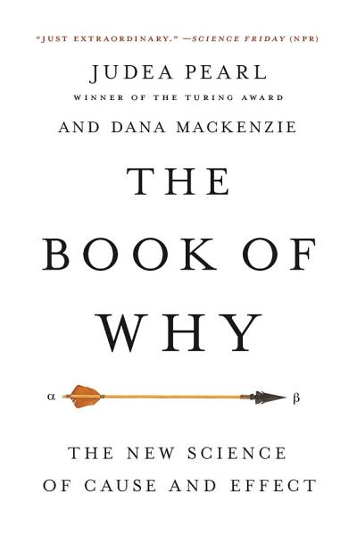

The Book of Why, by Pearl and Mackenzie
Thursday September 17, 2020
In The Book of Why, Judea Pearl explains that Judea Pearl's work is very important and most statisticians are malicious, fools, or both. The attempt to popularize his work fails to usefully communicate his contributions. You're better off reading his Seven Tools paper, which in six pages is more complete than and as instructive as the book.
Possibly useful ideas
The book is about how to answer questions based on data, which is a topic I'm very interested in. I tried to summarize some of the simplest ideas conveyed, about what variables to control for when estimating an effect. The book isn't a textbook, but I wish it had better explained how to implement more sophisticated control techniques.
Pearl references a paper whose authors used paired observational and experimental data, finding that "front-door adjustment" with the observational data gives a result like that from the experimental data. That's compelling! How can I use that adjustment?
I also liked the material (starting pages 200 and 309) on Simpson's Paradox.
To be clear, I think the book is trying to offer some useful ideas. I wish it were more successful in conveying them.
Sidestepping causality
You might think this book is about determining whether something causes something else, based on data. It is not.
"... causal questions can never be answered from data alone." (page 351)
Despite Pearl's finality, there is research on doing just this. It goes by causal discovery or exploratory causal analysis. In experiments, some machine learning methods do much better than chance in identifying known causal relationships. Pearl even advised a related paper. I agree there are epistemological uncertainties in this field, but it's interesting!
The closest the book comes to model identification are some allusions to independence tests that can indicate data isn't consistent with a model (or "Fit Indices" in Seven Tools). Pearl's causal models come from the outside knowledge of humans.
The book also doesn't have much to say on the philosophy of causation.
"... I have not attempted to define causation anywhere in this book ..." (page 48)
That isn't quite true, because he does eventually discuss counterfactual definitions of causality. But for the most part, causation is given an axiomatic existence and becomes a silent arrow. Feynman is more fun.
The arrows aren't necessarily bad, but the book is so busy begging for unrelated praise that we don't get a clear picture of what they're good for.
Wishful AI
Distinctions between statistics, machine learning, and AI can be murky, but this book has a mostly statistical flavor. Given a causal model and data, it's possible to estimate (learn) parameters and make predictions.
As above, there's no developed mechanism to learn what the causal graph should be. Systems like The Automatic Statistician do more to discover relationships in data. Pearl's methods require a human to provide a causal graph.
I quite agree with Pearl that current AI seems too behaviorist. Mental models seem important to intelligence. His approach of defining a symbolic solution to a class of problems he likes is not a compelling solution.
Like the proposal of Gary Marcus in The Algebraic Mind, Pearl offers that the symbolic system of his design "must be close to the way that our brains represent" things (page 269). This is not clear to me.
I agree that more advanced AI should be able to understand causality. I'm not sure Pearl's explicit methods will play a part. I further disagree with him on how communication works, and the Chinese Room.
Difficulties in reading
I have to imagine that Pearl is likable in person, but his style here reads as extreme self-praise and even putting down others to seem better by comparison. Knowing him only through this book, it's hard to root for him.
He tilts at straw men, writing as if statisticians and economists have never thought about causality without his guidance. But researchers have not been afraid to say things are "most likely a cause, not just a correlate" even without his work.
To make his work seem more novel, he keeps it at a distance from familiar topics, even when only the interpretation is different, preventing readers from easily connecting with prior knowledge.
He writes as if he could have more quickly shown a connection between smoking and lung cancer, but does not support this with evidence or example of a feasible mechanism. You might disagree with Tufte about whether data visualization could have prevented the Challenger disaster, but at least Tufte shows you the visualization.
In multiple places, Pearl says linear models don't support interactions. There must be an interpretation of this that is true, but I don't know what it is. Interactions are commonly modeled with linear models.
I had hoped that with some effort I'd be able to follow the example on page 83, but as far as I can tell it is incomplete or incorrect. (I emailed the authors asking for clarification and will update as appropriate.)
Andrew Gelman's notes mention some issues with the book. (And some others are even more glaring.) But also: Sherlock Holmes is not known for deduction or induction, but for abduction (page 93). It's not clear why we should change multiple variables on page 279, but freeze them on page 312.
This book could have been so much better.
Selected quotes
"... statistics focused exclusively on how to summarize data, not on how to interpret it." (page 6)
"Another advantage causal models have that data mining and deep learning lack is adaptability." (page 17)
"In his book Sapiens, historial Yuval Harari posits that our ancestors' capacity to imagine nonexistent things was the key to everything, for it allowed them to communicate better." (page 25)
"The difference is profound and lies in the absence of a model of reality." (page 30)
"Searle's [Chinese Room] challenge has only one flaw: cheating [meaning having a working Chinese Room] is not easy; in fact, it is impossible." (page 38)
"Instead of predicting whether a prisoner is alive or dead, we might want to predict how much the unemployment rate will go up if we raise the minimum wage." (page 43)
"a philosophical school called positivism, which holds that the universe is a product of human thought and that science is only a description of those thoughts." (page 67)
This is at best a tortured interpretation of positivism. Wikipedia says: "Positivism asserts that all authentic knowledge allows verification and that all authentic knowledge assumes that the only valid knowledge is scientific."
"Two people who believe in two different causal diagrams can analyze the same data and may never come to the same conclusion, regardless of how “big” the data are." (page 90)
It's hard to see how this is an improvement over the Hill guidelines
"Generally [sensitivity] is the same for all types of patients, because it depends only on the technical capability of the testing instrument to detect the abnormalities associated with the disease." (page 104)
"... the sensitivity of mammograms for forty-year-old women is 73 percent." (page 105)
"(Applicants for asylum must prove that they have fifteen family members in the Netherlands.)" (page 122)
This is not true. There is an update in the errata, but it's still surprising it made it to print.
"... if you have identified a sufficient set of deconfounders in your diagram, gathered data on them, and properly adjusted for them, then you have every right to say that you have computed the causal effect X ➔ Y (provided, of course, that you can defend your causal diagram on scientific grounds)." (page 139)
"Statisticians have devised ingenius methods for handling this “curse of dimensionality” problem. Most involve some sort of extrapolation, whereby a smooth function is fitted to the data and used to fill in the holes created by the empty strata." (page 221)
"Regression coefficients, whether adjusted or not, are only statistical trends, conveying no causal information in themselves. \( r_{YX.Z} \) represents the causal effect of X on Y, whereas \( r_{YX} \) does not, exclusively because we have a diagram showing Z as a confounder of X and Y." (page 223)
"Path coefficients are fundamentally different from regression coefficients, although they can often be computed from the latter." (page 223)
"If I were less modest, I would close here with Isaac Newton's famous saying about “standing on the shoulders of giants.”" (page 244)
This is at the close of a section about the work his students have done. The generous interpretation is that he isn't saying that he's the giant.
"As argued in Chapter 1, our ability to conceive of alternative, nonexistent worlds separated us from our protohuman ancestors and indeed from any other creature on the planet." (page 260)
"Could structural models, in some shape or form, be the actual shortcut that we use [in our physical brains]? I think it is very likely, for two reasons. First, structural causal models are a shortcut that works, and there aren't any competitors around with that miraculous property. Second, they were modeled on Bayesian networks, which in turn were modeled on David Rumelhart's description of message passing in the brain." (page 268)
"Causal diagrams, with their simple rules of following and erasing arrows, must be close to the way that our brains represent counterfactuals." (page 269)
"[Linear models] also cannot represent interactions between variables." (page 286)
"Provided the assumptions of no confounding and no protection hold, the rung-one metric of FAR [Fraction of Attributable Risk] is promoted to rung three, where it becomes PN [Probability of Necessity]." (page 292)
"Using her data and path analysis, she computed the direct effect of parental IQ on children's IQ and found that only 35 percent, or about one-third, of IQ variation is inherited. In other words, parents with an IQ fifteen points above average would typically have children five points above average." (page 306)
"... linear models do not allow interactions ..." (page 322)
"This was one of the three greatest blunders of my career." (page 331)
I didn't notice if the other two were mentioned.
"The questions I have just asked are all causal, and causal questions can never be answered from data alone." (page 351)
"I wish I could present the reader with successful case studies of a complex transportability task and recovery from selection bias, but the techniques are still too new to have penetrated into general usage." (page 357)
"If our robots will all be as opaque as AlphaGo, we will not be able to hold a meaningful conversation with them, and that would be quite unfortunate." (page 361)
"I think that understanding the benefits of the illusion of free will is the key to the stubbornly enigmatic problem of reconciling it with determinism." (page 364)
